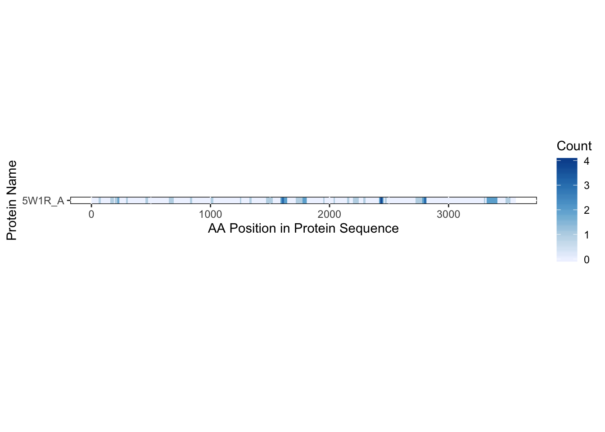

Benchmarking: Mapping peptides from PRKDC identified through original RBDmap paper (Castello et. al 2016)
Emma Gail
2019-09-10
Introduction
This tutorial will show you how to perform the basic functions of RBDmap analysis, using the original data from the RBDmap paper1.
RBDmap is a technique that involves UV crosslinking followed by RNA purification with tandem proteolytic digesting and LC-MS/MS to detect peptides adjacent to the crosslinking site. Since the adjacent peptide is what is detected by software such as MaxQuant2, approaches in bioinformatics are required to find the RNA-binding domain.
The crisscrosslinker package was developed for both protein-protein and protein-RNA data. This tutorial will focus on data derived from RBDmap-style experiments.
Install crisscrosslinkeR
If you have not done so already, please install crisscrosslinkeR:
library(devtools)
install_github('egmg726/crisscrosslinker')Load Libraries
Load the crisscrosslinker package into your R session along with its dependencies.
library(XML)
library(RCurl)
library(ggplot2)
library(bio3d)
library(Biostrings)
library(seqinr)
library(RColorBrewer)
library(openxlsx)
library(viridis)
library(stringr)
library(svglite)
library(crisscrosslinker)Load Data
For this tutorial, we will use a subset of data that was generated for the original RBDmap paper. The original data can be found here.
Once the library has been loaded, this data can be found as a table under the name rbdmapData.
rbdmapData <- read.table(system.file("extdata/RBDmap",'data.txt',package = 'crisscrosslinker',mustWork = TRUE),sep='\t',header = TRUE)
head(rbdmapData)## ENSG ProtID Symbol category Uniqueness domain enzyme
## 1 ENSG00000138758 Q9NVA2 SEPT11 RBDpep UniqueGene unknownRBD LysC
## 2 ENSG00000116001 P31483 TIA1 RBDpep UniqueGene knownRBD LysC
## 3 ENSG00000007080 Q96CT7 CCDC124 RBDpep UniqueGene unknownRBD LysC
## 4 ENSG00000149187 G5EA30 CELF1 RBDpep UniqueGene knownRBD LysC
## 5 ENSG00000145920 Q6PUV4 CPLX2 RBDpep UniqueGene unknownRBD LysC
## 6 ENSG00000124228 Q96GQ7 DDX27 RBDpep UniqueGene knownRBD LysC
## proteolyticFragment
## 1 KKAAAQLLQSQAQQSGAQQTK
## 2 AAFAPFGRISDARVVK
## 3 AKSHLEVPLEENVNRRVLEEGSVEARTIEDAIAVLSVAEEAADRHPERRMRAAFTAFEEAQLPRLK
## 4 AALEAQNALHNMK
## 5 AALEQPCEGSLTRPK
## 6 SQEAALRAAPDILIATPGRLIDHLHNCPSFHLSSIEVLILDEADRMLDEYFEEQMK
## fragmentStart fragmentStop trypticPeptide
## 1 398 418 AAAQLLQSQAQQSGAQQTK
## 2 124 139 AAFAPFGR
## 3 120 185 AAFTAFEEAQLPR
## 4 98 110 AALEAQNALHNMK
## 5 84 98 AALEQPCEGSLTRPK
## 6 331 386 AAPDILIATPGRThe main columns we will use for this tutorial will be:
protIDA unique identifier for the protein sequence used (does not necessarily have to be a UniProt ID). For thecrisscrosslinkerpackage, it can also be an identifier from a FASTA file that will be used later in the tutorial.trypticPeptideThis is the peptide detected by a software such as MaxQuant from the protein identified in theprotIDcolumn.enzymeThe enzyme used for the experiment. At this time, “ArgC” and “LysC” are the 2 enzymes that are supported by crisscrosslinker. If you would like to suggest an additional protease used by your lab, please let me know.
We will use this information to determine:
proteolyticFragmentThe fragment containing the tryptic peptide as well as the RNA-binding domain.
In order to directly compare the the proteolytic fragments, the same parameters will be used for the analysis done in this tutorial.
From the manual:
The cleavage patterns of the proteolytic enzymes are defined by a regular expression specifying exatcly three amino acid positions before and three after the cleavage site.
There is also a cleaveOffset defined as 4 within the R script of the RBDmap R package. We will use these settings for our example gene to show that this program can find the same RNA-binding domains as stated in the original RBDmap paper.
Example in Practice: PRKDC
Since we want to look at other features of the crisscrosslinkeR package such as creating a PyMOL script to visualize the RBDs, we will look at only one gene: PRKDC. PRKDC is a protein kinase with a fairly complete structure and a large number of tryptic peptides within the RBDmap dataset and so is a good choice for highlighting these additional features.
Filter Data
We will first filter our data so that only the tryptic peptides found in the PRKDC protein will be used for this example.
uniprot.id <- 'P78527'
rbdmapPRKDC <- na.omit(rbdmapData[rbdmapData$ProtID == uniprot.id,])
nrow(rbdmapPRKDC)## [1] 62There are 62 tryptic peptides that were detected by RBDmap. However, we want to filter this dataset even further to only the essential columns.
rbdmapPRKDC.2 <- rbdmapPRKDC[,c('ProtID','enzyme','trypticPeptide')]
head(rbdmapPRKDC.2)## ProtID enzyme trypticPeptide
## 1747 P78527 LysC DFGLLVFVR
## 2096 P78527 LysC HECMAPLTALVK
## 2270 P78527 LysC LQETLSAADR
## 2332 P78527 LysC NCISTVVHQGLIR
## 3346 P78527 ArgC NLSSNEAISLEEIR
## 3381 P78527 ArgC QKICYAKThese three columns are all that you need to run the following functions.
Get Binding Sequences
The function rbd.getBSfromDF will be used to get the proteolytic fragments.
One of the benefits of the crisscrosslinker package is that large databases containing the sequences of your proteins of interest are not needed. All of this data can be automatically fetched from the UniProt website as long as you have a reliable internet connection.
However, we know this is not always the case. In the case of a protein with a sequence slightly different to that of a UniProt canonical sequence. In this case, you will need the FASTA file that was used to align the tryptic peptides, making sure that the names of the protID match those within the FASTA file.
In this case, we are only focused on 1 protein sequence and do not want to fetch the same protein sequence 62 times from UniProt.
We can easily retrieve and save the UniProt FASTA sequence from R using the function uniprot.fasta and set download_fasta to TRUE. If you have multiple proteins that you are matching your data against, make sure that these sequences are within the same FASTA file.
uniprot.fasta(uniprot.id, download.fasta = TRUE)
fasta <- seqinr::read.fasta(paste0(uniprot.id,'.fasta'))We will then use this FASTA file to be able to match the RNA-bound fragments based on the sequence and the data from the RBDmap experiment.
rbdmapPRKDC.bs <- rbd.getBSfromDF(rbdmapPRKDC.2,fasta = fasta, cleave_offset = 4)
table(as.character(rbdmapPRKDC$proteolyticFragment) == as.character(rbdmapPRKDC.bs$proteolyticFragment))##
## TRUE
## 62Since there are no FALSE statements, all 62 of the proteolytic fragments match each other between those published by Castello et. al and those determined by crisscrosslinker.
head(rbdmapPRKDC.bs)## ProtID enzyme trypticPeptide
## 1747 P78527 LysC DFGLLVFVR
## 2096 P78527 LysC HECMAPLTALVK
## 2270 P78527 LysC LQETLSAADR
## 2332 P78527 LysC NCISTVVHQGLIR
## 3346 P78527 ArgC NLSSNEAISLEEIR
## 3381 P78527 ArgC QKICYAK
## proteolyticFragment
## 1747 MAGSGAGVRCSLLRLQETLSAADRCGAALAGHQLIRGLGQECVLSSSPAVLALQTSLVFSRDFGLLVFVRK
## 2096 EAREAANGDSDGPSYMSSLSYLADSTLSEEMSQFDFSTGVQSYSYSSQDPRPATGRFRRREQRDPTVHDDVLELEMDELNRHECMAPLTALVK
## 2270 MAGSGAGVRCSLLRLQETLSAADRCGAALAGHQLIRGLGQECVLSSSPAVLALQTSLVFSRDFGLLVFVRK
## 2332 GPVLRNCISTVVHQGLIRICSK
## 3346 AAQKGFNKVVLKHLKKTKNLSSNEAISLEEIR
## 3381 QKICYAKR
## fragmentStart fragmentStop
## 1747 1 71
## 2096 2010 2102
## 2270 1 71
## 2332 472 493
## 3346 821 852
## 3381 4042 4049Matching the Sequences to UniProt/PDB using BLAST (Optional)
In order to utilize the other features of crisscrosslinker, we have to match the sequences to known UniProt and PDB identifiers. For this example, all of the proteolytic peptides have already been linked to a UniProt identifier. However, if we did not know this, we could BLAST the sequence from the FASTA file through the Swissprot database.
sequence <- fasta[[1]]
uniprot.id <- blast.menu(sequence,database='swissprot')$pdb.id
uniprotSeq <- uniprot.fasta(uniprot.id, download_fasta = TRUE)For the PyMOL functions, we will have to know the PDB ID to match the sequence against. If you have not already selected the PDB ID to use, you can use the blast.menu function as you did for selecting a UniProt ID using the pdb database instead.
pdb.info <- blast.menu(sequence,database='pdb')
pdb.id <- pdb.info$pdb_id
chain <- pdb.info$chainMatching the Sequences to UniProt/PDB using Identifiers (Optional)
However, using BLAST for many searches may not be the most efficient option if you already have a UniProt/PDB ID and want to get the other. If you already have a UniProt ID, you can find PDBs that have curated by the site.
uniprot.info <- bio3d::uniprot(uniprot.id)
uniprot.info$dbref[uniprot.info$dbref$type == 'PDB',]## type id
## 18 PDB 5LUQ
## 19 PDB 5W1R
## 20 PDB 5Y3RYou can use this information to find the chain(s) associated with your Uniprot ID.
Similarily, many chains on PDB structures have corresponding UniProt IDs. If you already have the ID and chain, you can see if there is a known UniProt ID attached by using the bio3d function pdb.annotate.
pdb.id <- '5W1R'
chain <- 'A'
pdb.anno <- bio3d::pdb.annotate(pdb.id)
pdb.anno[paste0(pdb.id,'_',chain),c('db_name','db_id')]## db_name db_id
## 5W1R_A UniProt P78527If you do not have the chain already, you can also use pdb.annotate to find all of the chains associated with your UniProt ID.
Aligning the Sequence to UniProt/PDB Sequences
In this case, we have already selected the PDB structure 5W1R, which covers most of the protein sequence on a single chain. We will add all 3 of the identifiers to a data.frame that we will use for alignment.
alignIDs <- data.frame(protID='P78527',uniprotID='P78527',pdbID='5W1R_A')In this case, the protID and uniprotID are the same. However, this is not always the case and should be made explicit for the functions to work correctly.
Since the proteins have already been aligned to the UniProt sequence, we will align only to the chosen PDB structure.
bs.output <- rbd.alignBS(rbdmapPRKDC.bs,alignIDs,alignTo='pdb',uniprot2pdb=TRUE)The uniprot2pdb selector has been set to TRUE to increase the accuracy of the alignment. When this is selected, it will use RCSB PDB mapping information to select the start and end points. This should be selected when:
- The difference between the UniProt sequence and the protein sequence used in the experiment are very similar or are the same.
- There are many gaps in the PDB chain selected which may make a pairwise alignment difficult or inaccurate.
table(bs.output$db)##
## PDB UniProt
## 46 16Of our 62 proteolytic fragments, 46 of them were able to be mapped to our selected PDB structure. We can visualize these fragments by generating a PyMol file as well as a heatmap.
rbd.pymol(bs.output, color_by = 'freq',
colors = 'Blues', file.name = 'rbd.PRKDC.blues.pml',
heatmap = TRUE)
## HEADER DNA BINDING PROTEIN 04-JUN-17 5W1RWhile this heatmap corresponds to the amino acids within the PDB chain sequence, it is recommended to use this visualization for your other sequences as well, including UniProt and FASTA.
The .pml file can be opened in the program PyMOL. It will automatically color the structure by the frequency of the binding sequences (including those which are not identical but still overlap on the sequence).

For more options showing the range of rbd.pymol, see this workflow.
Session Info
devtools::session_info()## ─ Session info ──────────────────────────────────────────────────────────
## setting value
## version R version 3.5.1 (2018-07-02)
## os macOS 10.14.3
## system x86_64, darwin15.6.0
## ui RStudio
## language (EN)
## collate en_US.UTF-8
## ctype en_US.UTF-8
## tz Australia/Melbourne
## date 2019-09-10
##
## ─ Packages ──────────────────────────────────────────────────────────────
## package * version date lib
## ade4 1.7-13 2018-08-31 [1]
## assertthat 0.2.1 2019-03-21 [1]
## backports 1.1.4 2019-04-10 [1]
## bio3d * 2.3-4 2018-04-03 [1]
## BiocGenerics * 0.28.0 2018-10-30 [1]
## Biostrings * 2.50.2 2019-01-03 [1]
## bitops * 1.0-6 2013-08-17 [1]
## callr 3.3.1 2019-07-18 [1]
## cli 1.1.0 2019-03-19 [1]
## codetools 0.2-16 2018-12-24 [1]
## colorspace 1.4-1 2019-03-18 [1]
## crayon 1.3.4 2017-09-16 [1]
## crisscrosslinker * 0.9 2019-09-03 [1]
## curl * 4.0 2019-07-22 [1]
## desc 1.2.0 2018-05-01 [1]
## devtools * 2.1.0 2019-07-06 [1]
## digest 0.6.20 2019-07-04 [1]
## dplyr 0.8.3 2019-07-04 [1]
## evaluate 0.14 2019-05-28 [1]
## fs 1.3.1 2019-05-06 [1]
## gdtools * 0.1.9 2019-06-18 [1]
## ggplot2 * 3.2.1 2019-08-10 [1]
## glue 1.3.1 2019-03-12 [1]
## gridExtra 2.3 2017-09-09 [1]
## gtable 0.3.0 2019-03-25 [1]
## highr 0.8 2019-03-20 [1]
## htmltools 0.3.6 2017-04-28 [1]
## httr * 1.4.1 2019-08-05 [1]
## IRanges * 2.16.0 2018-10-30 [1]
## jsonlite * 1.6 2018-12-07 [1]
## knitr 1.24 2019-08-08 [1]
## labeling 0.3 2014-08-23 [1]
## lattice 0.20-38 2018-11-04 [1]
## lava 1.6.6 2019-08-01 [1]
## lazyeval 0.2.2 2019-03-15 [1]
## magrittr 1.5 2014-11-22 [1]
## MASS 7.3-51.4 2019-03-31 [1]
## Matrix 1.2-17 2019-03-22 [1]
## memoise 1.1.0 2017-04-21 [1]
## munsell 0.5.0 2018-06-12 [1]
## openxlsx * 4.1.0.1 2019-05-28 [1]
## pillar 1.4.2 2019-06-29 [1]
## pkgbuild 1.0.5 2019-08-26 [1]
## pkgconfig 2.0.2 2018-08-16 [1]
## pkgload 1.0.2 2018-10-29 [1]
## plyr 1.8.4 2016-06-08 [1]
## prettyunits 1.0.2 2015-07-13 [1]
## processx 3.4.1 2019-07-18 [1]
## prodlim 2018.04.18 2018-04-18 [1]
## ps 1.3.0 2018-12-21 [1]
## purrr 0.3.2 2019-03-15 [1]
## R6 2.4.0 2019-02-14 [1]
## RColorBrewer * 1.1-2 2014-12-07 [1]
## Rcpp 1.0.2 2019-07-25 [1]
## RCurl * 1.95-4.12 2019-03-04 [1]
## remotes 2.1.0 2019-06-24 [1]
## reshape2 * 1.4.3 2017-12-11 [1]
## rlang 0.4.0 2019-06-25 [1]
## rmarkdown 1.15 2019-08-21 [1]
## rprojroot 1.3-2 2018-01-03 [1]
## rstudioapi 0.10 2019-03-19 [1]
## S4Vectors * 0.20.1 2018-11-09 [1]
## scales 1.0.0 2018-08-09 [1]
## seqinr * 3.4-5 2017-08-01 [1]
## sessioninfo 1.1.1 2018-11-05 [1]
## stringi 1.4.3 2019-03-12 [1]
## stringr * 1.4.0 2019-02-10 [1]
## survival 2.44-1.1 2019-04-01 [1]
## svglite * 1.2.2 2019-05-17 [1]
## testthat 2.2.1 2019-07-25 [1]
## tibble 2.1.3 2019-06-06 [1]
## tidyselect 0.2.5 2018-10-11 [1]
## tufte * 0.5 2019-05-12 [1]
## usethis * 1.5.1 2019-07-04 [1]
## viridis * 0.5.1 2018-03-29 [1]
## viridisLite * 0.3.0 2018-02-01 [1]
## wesanderson * 0.3.6 2018-04-20 [1]
## withr 2.1.2 2018-03-15 [1]
## xfun 0.9 2019-08-21 [1]
## XML * 3.98-1.20 2019-06-06 [1]
## xml2 1.2.2 2019-08-09 [1]
## XVector * 0.22.0 2018-10-30 [1]
## yaml 2.2.0 2018-07-25 [1]
## zip 2.0.4 2019-09-01 [1]
## zlibbioc 1.28.0 2018-10-30 [1]
## source
## CRAN (R 3.5.0)
## CRAN (R 3.5.2)
## CRAN (R 3.5.2)
## CRAN (R 3.5.0)
## Bioconductor
## Bioconductor
## CRAN (R 3.5.0)
## CRAN (R 3.5.2)
## CRAN (R 3.5.2)
## CRAN (R 3.5.2)
## CRAN (R 3.5.2)
## CRAN (R 3.5.0)
## Github (egmg726/crisscrosslinker@2238988)
## CRAN (R 3.5.2)
## CRAN (R 3.5.0)
## CRAN (R 3.5.1)
## CRAN (R 3.5.2)
## CRAN (R 3.5.2)
## CRAN (R 3.5.2)
## CRAN (R 3.5.2)
## CRAN (R 3.5.2)
## CRAN (R 3.5.2)
## CRAN (R 3.5.2)
## CRAN (R 3.5.0)
## CRAN (R 3.5.2)
## CRAN (R 3.5.2)
## CRAN (R 3.5.0)
## CRAN (R 3.5.2)
## Bioconductor
## CRAN (R 3.5.0)
## CRAN (R 3.5.2)
## CRAN (R 3.5.0)
## CRAN (R 3.5.0)
## CRAN (R 3.5.2)
## CRAN (R 3.5.2)
## CRAN (R 3.5.0)
## CRAN (R 3.5.2)
## CRAN (R 3.5.2)
## CRAN (R 3.5.0)
## CRAN (R 3.5.0)
## CRAN (R 3.5.2)
## CRAN (R 3.5.2)
## CRAN (R 3.5.2)
## CRAN (R 3.5.0)
## CRAN (R 3.5.0)
## CRAN (R 3.5.0)
## CRAN (R 3.5.0)
## CRAN (R 3.5.2)
## CRAN (R 3.5.0)
## CRAN (R 3.5.0)
## CRAN (R 3.5.2)
## CRAN (R 3.5.2)
## CRAN (R 3.5.0)
## CRAN (R 3.5.2)
## CRAN (R 3.5.2)
## CRAN (R 3.5.2)
## CRAN (R 3.5.0)
## CRAN (R 3.5.2)
## CRAN (R 3.5.2)
## CRAN (R 3.5.0)
## CRAN (R 3.5.2)
## Bioconductor
## CRAN (R 3.5.0)
## CRAN (R 3.5.0)
## CRAN (R 3.5.0)
## CRAN (R 3.5.2)
## CRAN (R 3.5.2)
## CRAN (R 3.5.2)
## CRAN (R 3.5.2)
## CRAN (R 3.5.2)
## CRAN (R 3.5.2)
## CRAN (R 3.5.0)
## CRAN (R 3.5.2)
## CRAN (R 3.5.2)
## CRAN (R 3.5.0)
## CRAN (R 3.5.0)
## CRAN (R 3.5.0)
## CRAN (R 3.5.0)
## CRAN (R 3.5.2)
## CRAN (R 3.5.2)
## CRAN (R 3.5.2)
## Bioconductor
## CRAN (R 3.5.0)
## CRAN (R 3.5.2)
## Bioconductor
##
## [1] /Library/Frameworks/R.framework/Versions/3.5/Resources/libraryReferences
Castello, A. et al. Comprehensive Identification of RNA-Binding Domains in Human Cells. Molecular Cell 63, 696-710, doi:10.1016/j.molcel.2016.06.029 (2016).
Tyanova, S., Temu, T. & Cox, J. The MaxQuant computational platform for mass spectrometry-based shotgun proteomics. Nature Protocols 11, 2301-2319, doi:10.1038/nprot.2016.136 (2016).